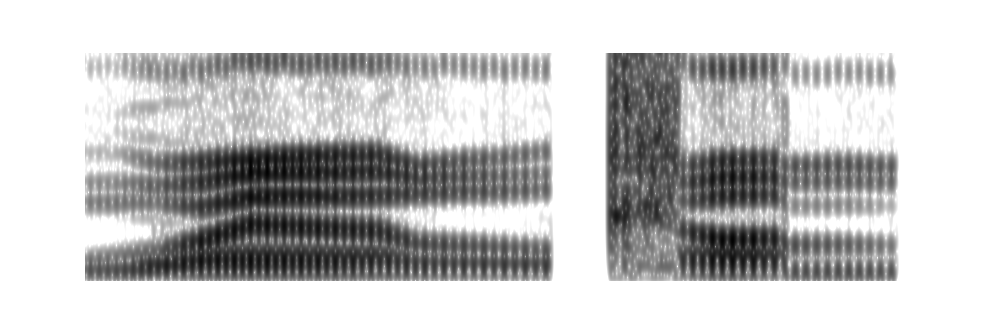
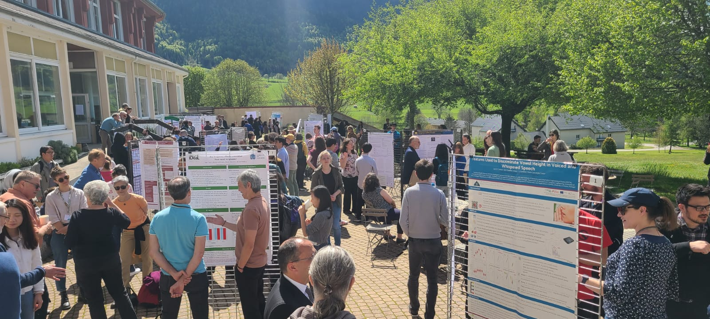
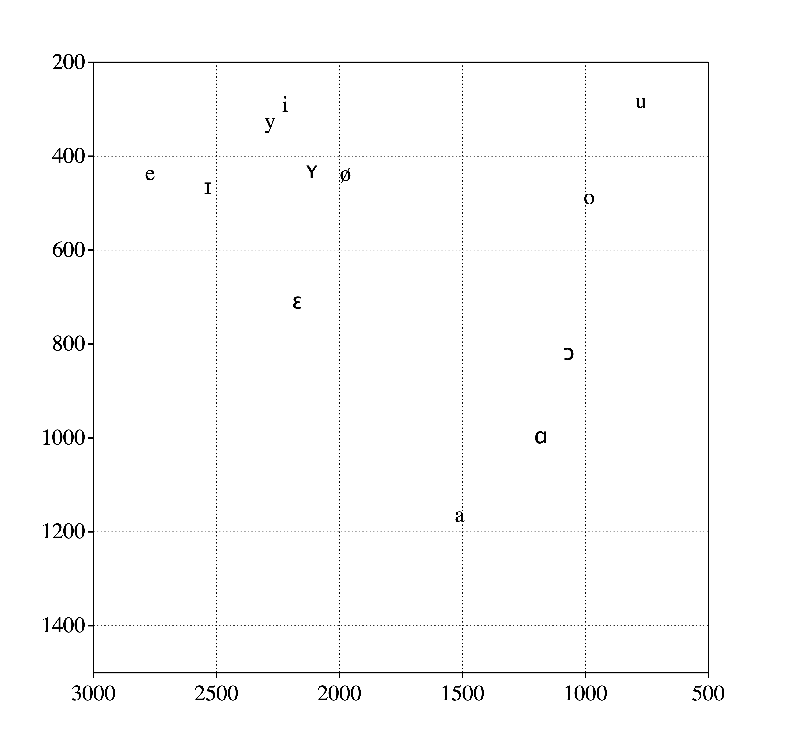

Bio
I am Xinyu Zhang*, linguist in training. I am currently a PhD candidate at CLS Radboud and International Max Planck Research School for language sciences.
My research interest lies primarily in phonetics. For my PhD project, I study the relationship between speech production and speech perception, by looking at both typical and clinical populations.
Previously I studied at ACLC of University of Amsterdam, under the supervision of Dr. Rob van Son and Dr. Paul Boersma.
My previous research projects include a study on the cross-generation auditory dispersion of the Dutch sibilants /s/ and /ɕ/, and a study of the psychoacoustics of perceived voice qualities after the treatment of laryngeal carcinoma.
Please like and subscribe :)
* Prescribed pronunciation: [ɕin˥˥ɥy˨˩˦ ʈ͡ʂɑŋ˥˥], but I welcome and am interested in all phonological adaptations.
News
🔉 Three of my blog posts are now out on Max Planck Institute's TalkLing TalkLing :) Go have a look if you are interested in some ELI5 about the role of somatosensory feedback on speech perception, a.k.a. Listening with your mouth full , the role of auditory feedback on speech production, in other words "Are you even listening to yourself?", and/or how somatosensory information improves speech intelligibility, or to put it another way Talk a while in their tongues
I will be presenting my production experiment at the Dag van de Fonetiek on 31 Oct.
I will be presenting at Max Planck Institute's Bite-Sized Insights on 7 Oct. Come see me during your lunch break :)
I was at ISSP in Autrans, France, and had a blast!
I will be presenting at ICPhS in Prague! <3


Education
Radboud University /
IMPRS Graduate School Max Planck Institute for Psycholinguistics | Nijmegen, The Netherlands
PhD in Linguistics | September 2021 - now
University of Amsterdam - ACLC | Amsterdam, The Netherlands
rMA in Linguistics | September 2019 - 2021
University of Amsterdam | Amsterdam, The Netherlands
MA in General Linguisitics | September 2018 - August 2020
Party Tricks
Praat sings Happy Birthday | Praat Script | © Xinyu Zhang, 2019
Let R automate participant notification email for ya | R script + Rmd|© Mine Çetinkaya-Rundel, 2015; modified by Xinyu Zhang, 2021
Things you didn’t need to know:
If you want to get to know me a tiny bit better, here are my cardinal vowels plotted.
(I mean, what better way to get to know someone, right?)

Also, I play the sacriligious otamatone
Vault
Results from the voice quality study: rMA thesis
Results from the sibilant study: MA thesis